We hope to create a realistic 3D rendering of a teapot pouring tea into a teacup. The final result aims to showcase the interaction of particle physics in the liquid tea and gaseous steam in addition to the material rendering of the teapot and teacup.
In computer graphics, simulating realistic interactions between different materials and elements is often challenging. For example, pouring hot liquid from one container into another requires fluid dynamics, particle physics, and material properties all to be accurately depicted and cohesive in the scene. By creating our teapot scene, we aim to address these issues in our project.
Specific challenges:
Our solution:
In pursuit of achieving a realistic teapot simulation, we outline the following goals:
For each of these goals, we will evaluate the performance of the system qualitatively based on realism. As for quantifiable metrics, seconds per frame for a given render will measure its efficiency.
|
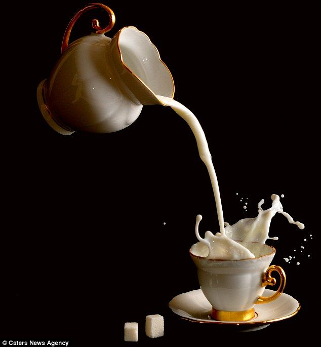
|
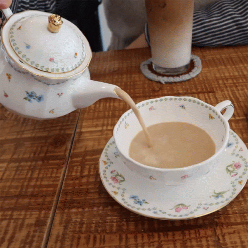
|
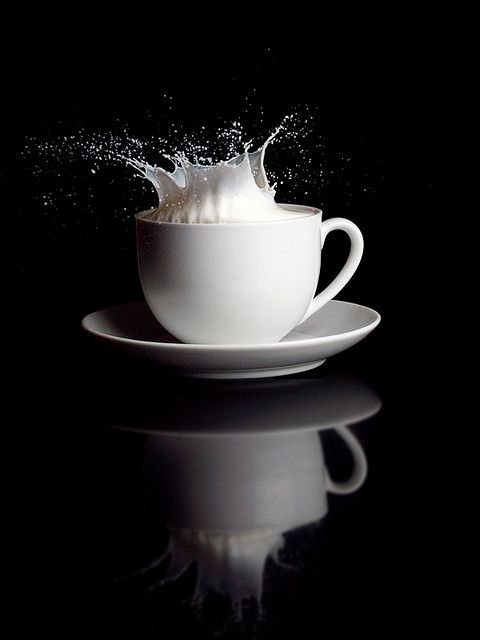
|
To simulate fluid dynamics, we plan to use a particle-based approach using Lagrangian techniques. Although they may not be as accurate as grid-based simulations, particle-based simulations are known to be faster, more feasible to implement and understand, and more suited for real-time applications. Given the large body of literature on the topic of particle simulations in computer graphics and online resources, we believe that we will be able to accomplish this in our project.
We plan to make this particle system generalizable to different parameters such as viscosity, color, and transparency to facilitate the simulation of different liquids—for example, water, milk, and honey—as an additional feature!
|
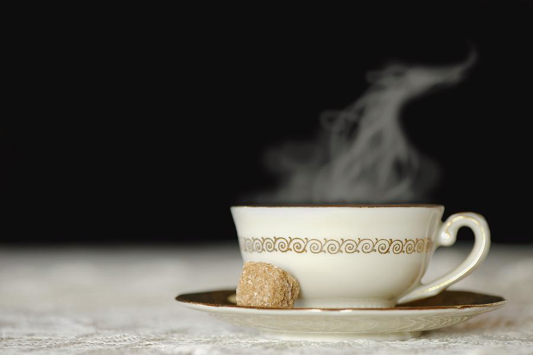
|
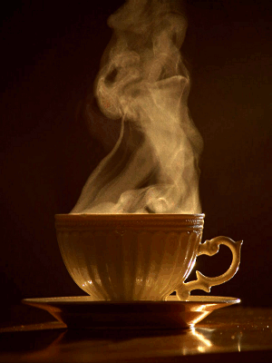
|
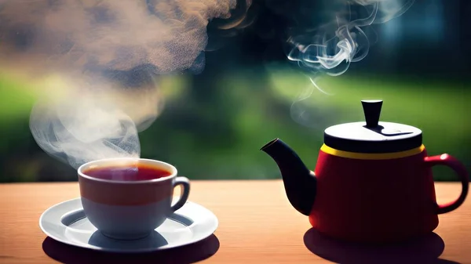
|
Mist, smoke, steam, etc. all behave similarly to liquids—this has been modeled via the Navier-Stokes equations. As such, we extend the system used to simulate liquids to also simulate steam. We plan on designing an over-arching SPH (Smoothed-Particle Hydrodynamics) framework using one of the C++ fluid simulation libraries (in Resources). Both tea and steam particles will inherit from this framework, with steam particles using a slightly modified version of the Navier-Stokes equations—namely the incompressible Euler equations (with some potential optimizations by Fedkiw, Stam, and Jensen)—which were designed specifically to model the behavior of gases.
|
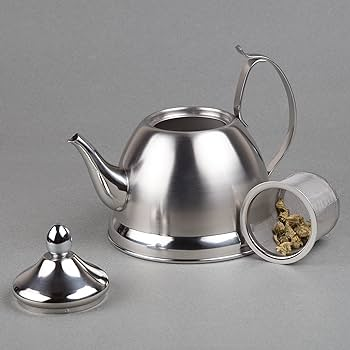
|
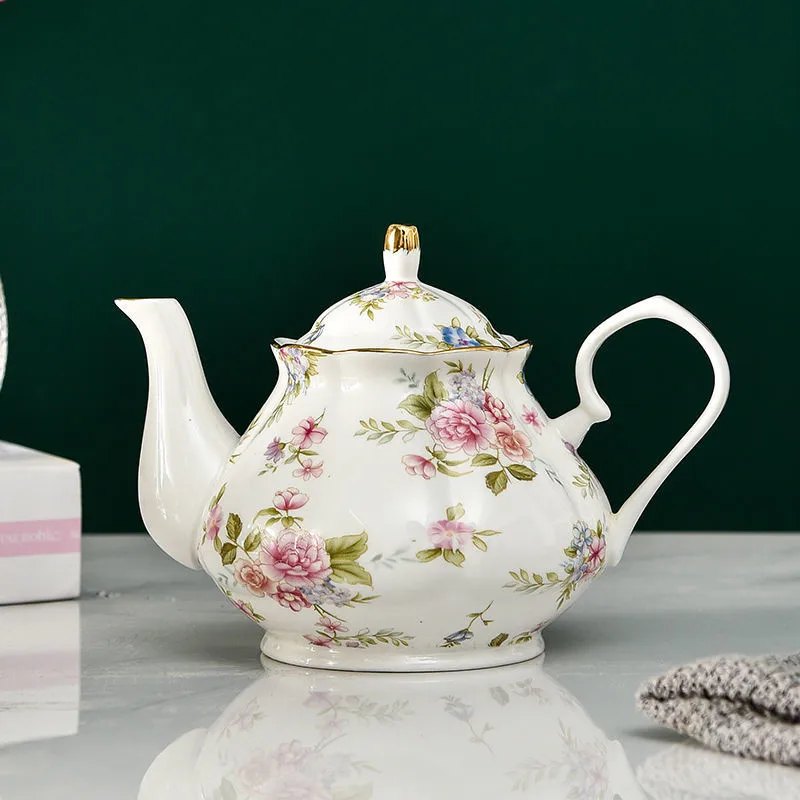
|
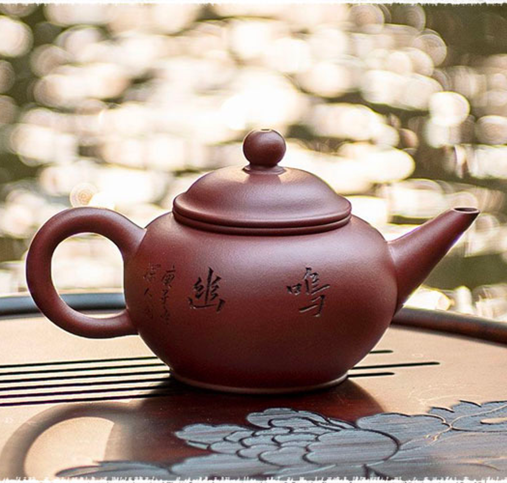
|
To implement realistic material rendering, we plan to use a BSSRDF model. In contrast to a conventional BRDF, this allows subsurface scattering of light through a material. For the use case of a teapot, this is useful for simulating materials which light may not fully reflect off of, for instance the edges of an unglazed ceramic. Implementing a BSSRDF as the baseline model for this project also allows the material of the teapot to be modified to a translucent or semi-translucent material as desired in stretch goals. This is a topic which has been widely covered in literature for at least 20 years and is touched upon briefly as part of the CS 184 course concepts, providing clear steps for implementation as part of this project.
Given our quantitative metric of seconds per frame, a BSSRDF may not provide a substantial increase in visual quality given the decrease in rendering speed compared to a conventional BRDF. To resolve this issue, if deemed necessary we will use a BRDF approximation of a BSSRDF as described by Jensen et al (2001). This would increase rendering speed while ideally maximizing visual quality.
|
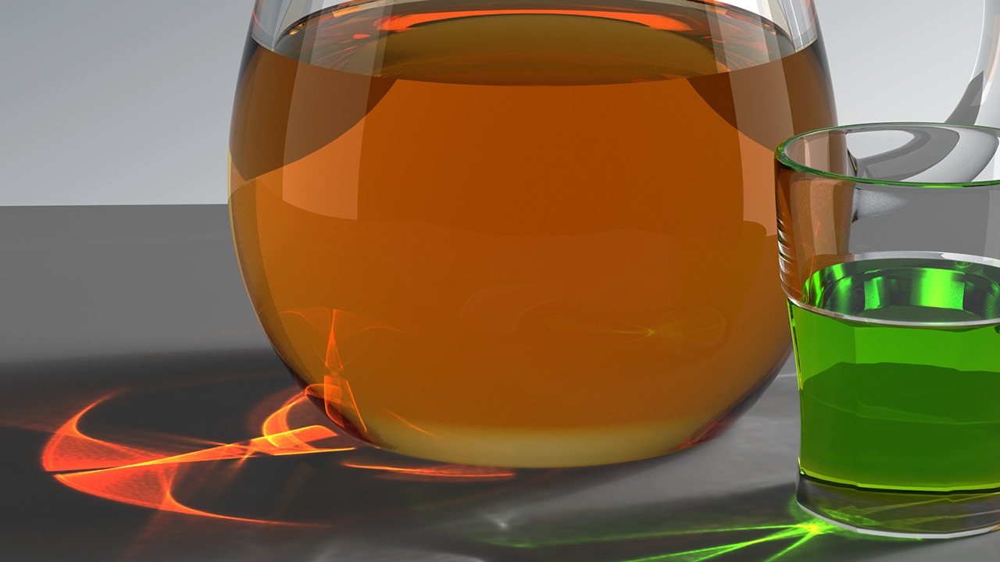
|
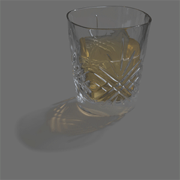
|
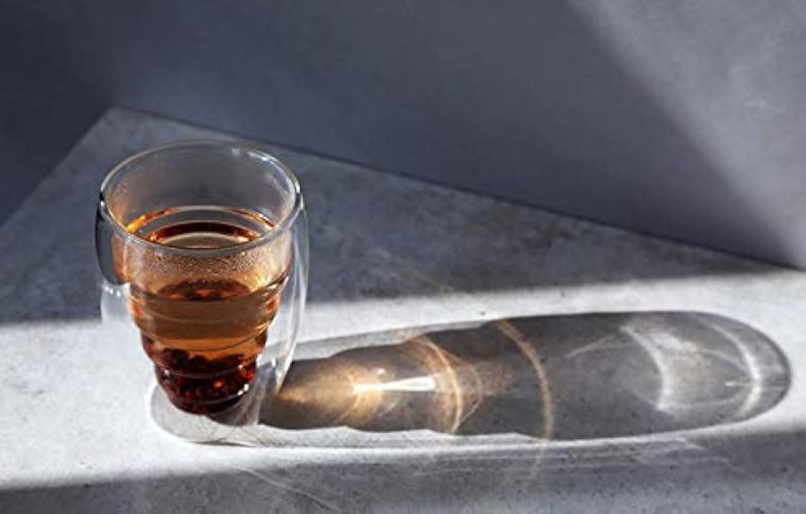
|
|
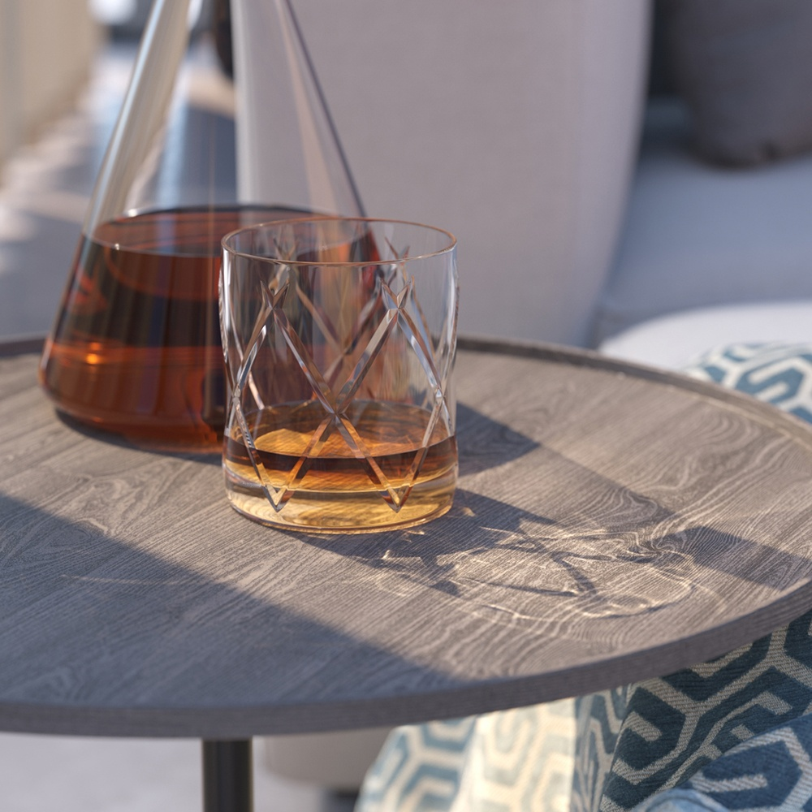
|
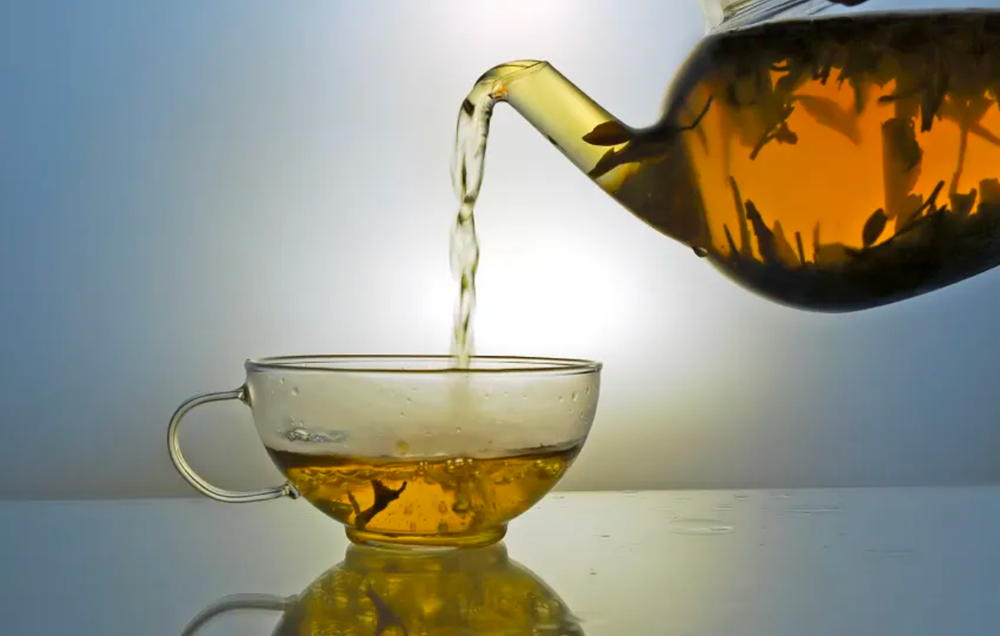
|
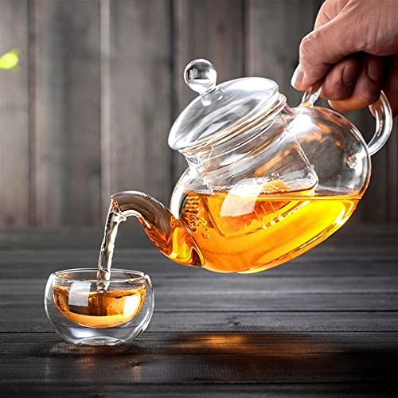
|
Caustics are the patterns of bright light that appear when a light source is refracted by a specular surface onto a diffuse surface. They are the sparkles of light we observe on a table when light shines through a glass of tea.
Monte Carlo ray tracing algorithms (like in HW3) fail to reliably produce caustic lighting, as a result of the low probability of sampling the appropriate light rays through specular materials. Thus, we are motivated to explore a photon mapping approach to global illumination. The traditional photon mapping algorithm introduced by Jensen involves two passes: (1) trace all photons and store where they end up (2) trace camera rays and observe how many photons are neighboring each ray-surface intersection. This process can produce caustic lighting but becomes memory intensive to store all photons and results in noise if the photon count is reduced to conserve memory.
We therefore plan to build on this algorithm with the ideas of Hachisuka et al., by progressively storing batches of photons, calculating their light contribution to camera rays, and then immediately discarding the photons before the next pass. This helps conserve the total amount of memory used at any given time, while also allowing us to scale up the number of photons emitted to reduce noise.
If we implement the aforementioned baseline goals ahead of schedule, we hope to deliver the following stretch goals:
Week 1
Week 2
Week 3
Week 4
Braley, C., & Sandu, A. (2010). Fluid simulation for computer graphics: A tutorial in grid based and particle based methods. Virginia Tech, Blacksburg.
Deng et al (2022). Reconstructing Translucent Objects using Differentiable Rendering. Cornell University.
Fedkiw, R., Stam, J., & Jensen, H. W. (2001, August 1). Visual simulation of smoke: Proceedings of the 28th Annual Conference on Computer Graphics and interactive techniques. ACM Conferences. https://dl.acm.org/doi/abs/10.1145/383259.383260
Hachisuka, T., Ogaki, S., & Jensen, H. W. (2008). Progressive photon mapping.ACM Trans. Graph.,27(5). doi:10.1145/1409060.1409083
Jensen et al. (2001). A Practical Model for Subsurface Light Transport. Stanford University.
Jensen (1996). Global Illumination using Photon Maps. Rendering Techniques '96.
Montes, R., & Ureña, C. (2012). An Overview of BRDF Models. University of Granada.
Fluid simulation libraries in C++: